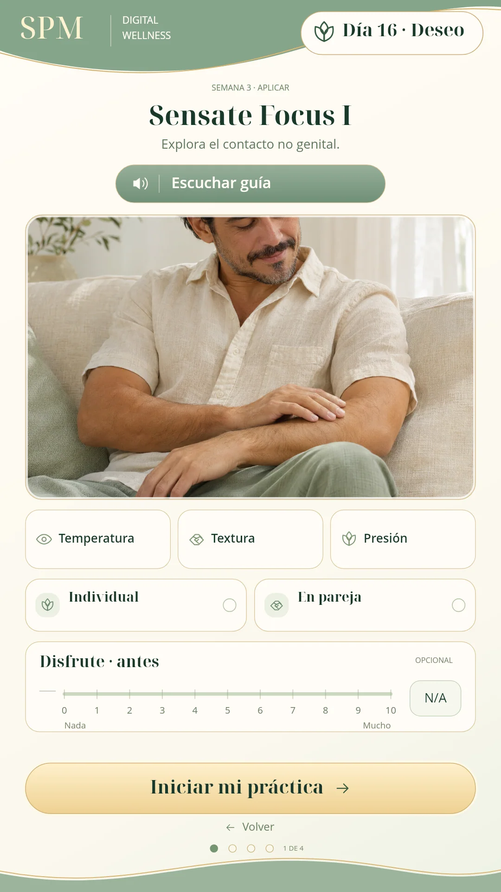
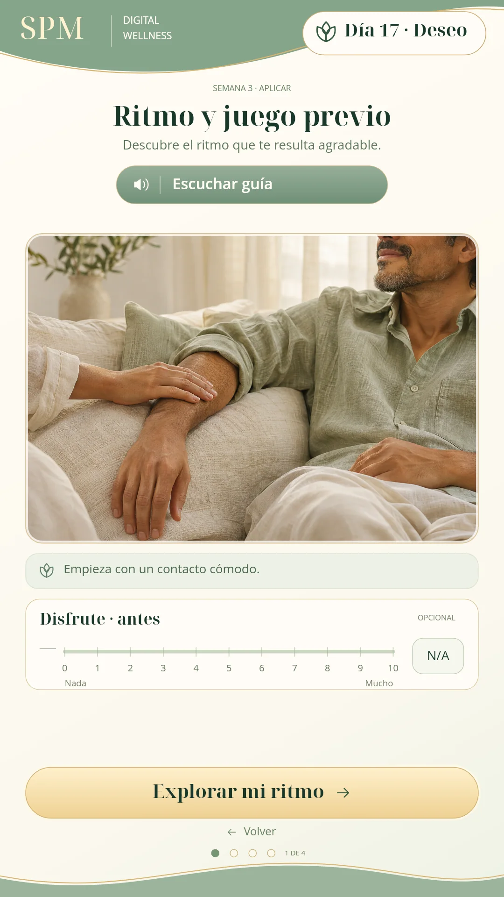
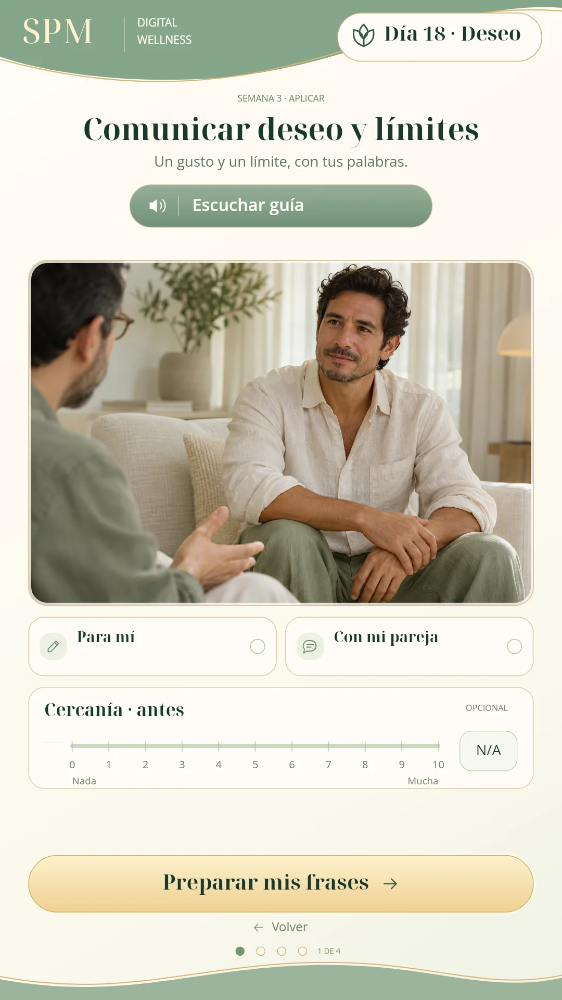
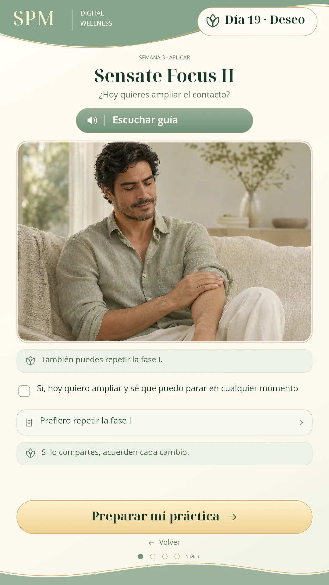
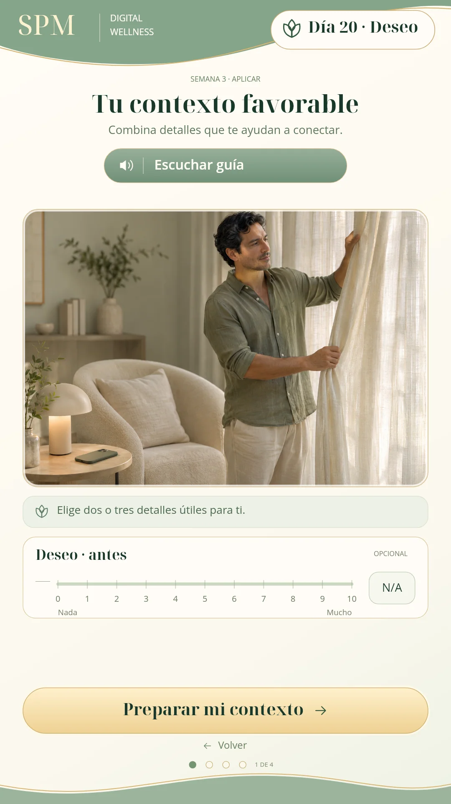
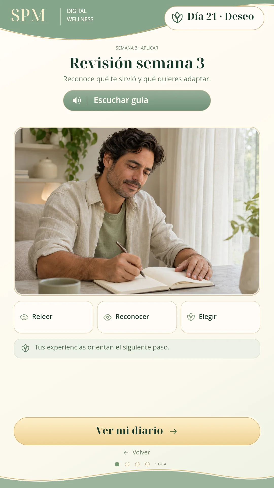

Sentir, conectar, elegir
Del día 15 al 21. Abre cada día para escuchar la guía y realizar la práctica a tu ritmo.
 Día 15 · Escalera de intimidadAbrir práctica
Día 15 · Escalera de intimidadAbrir práctica
Día 16 · Sensate Focus IAbrir práctica
Día 17 · Ritmo y juego previoAbrir práctica
Día 18 · Comunicar deseo y límitesAbrir práctica
Día 19 · Sensate Focus IIAbrir práctica
Día 20 · Tu contexto favorableAbrir práctica
Día 21 · Revisión semana 3Abrir práctica